In and around Pietrelcina
Pietrelcina has a good selection of restaurants, trattorias and agriturismo dining. From traditional home cooking to fine dining, there is something for every taste and budget.
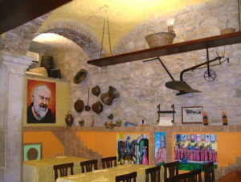
Trattoria C’era una volta
Via Caracciolo, 4
+39 0824 991052
TripAdvisor reviews · Map
Great steaks and amazing pasta! The interior is unique as it is located inside the lower ground floor of one of the town’s original buildings on the piazza. The entrance is down the steps leading to Via Riella. Also try their fish – the owner is a keen angler.
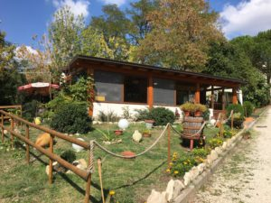
Green Galem
Via Gregaria, 82020 Pietrelcina BN
+39 347 648 9680
TripAdvisor reviews · Map
Run by a family who love their food and are happy to share that experience with you. Good home cooking in beautiful, peaceful surroundings.
Opposite the Friary church, turn right before the red brick school building. Go down a few meters and turn right again into a small lane. You will find yourself in a garden and children’s swing park where the restaurant is located.
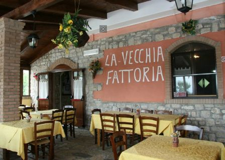
La Vecchia Fattoria Agriturismo
Via Piana Romana, 82020 Zona Industriale
+39 347 6531640
www.lavecchiafattoriaagriturismo.it · Map
A short drive from the town centre, located just behind the Piana Romana shrine. In winter they have a beautiful log fire burning and a warm welcome within. The food is good country fare and the meat is of a high quality.
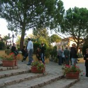
Hotel-Restaurant Il Sannio
Via Gregaria, 56
+39 0824 991327
TripAdvisor reviews · Map
This restaurant has three large dining rooms that are also used for groups and wedding receptions. Open only for lunch, closes around 6.30 pm. Good menus with fresh produce. Open to individuals but usually pre-booked by visiting pilgrim groups.
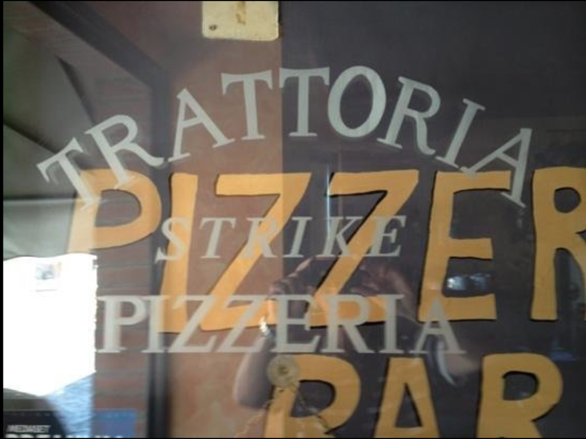
Strike
Via Francesco Paga, 44
+39 0824 991515
TripAdvisor reviews · Map
Very popular with local people and has been here in the town for many years. Good food and reasonable prices, located just off the main pedestrian tourist route. When you pass the Padre Pio museum you will see a cafe on the left of the road with an outside seating area. The restaurant is at the back of that cafe. Also well known for its pizzas.
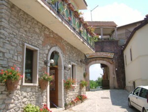
Trattoria da Silvano
Piazza Santissima Annunziata, 40
+39 0824 997593
TripAdvisor reviews · Map
Has à la carte or tourist menu – also does excellent pizza take-away.
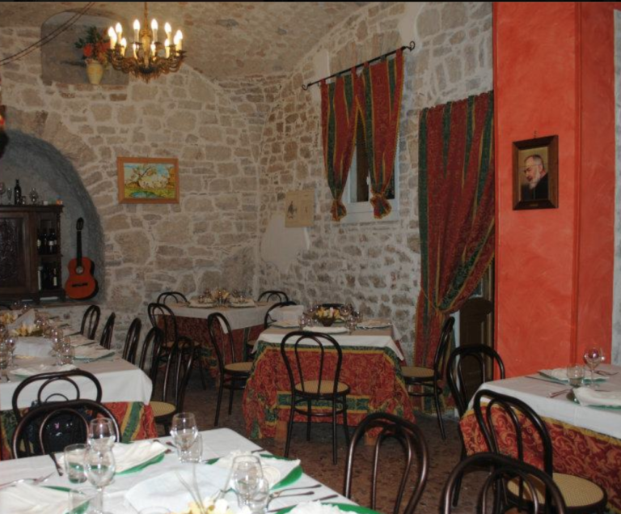
Il Pozzo Di Pulcinella
Piazza Santissima Annunziata, 11
+39 346 025 9274
TripAdvisor reviews · Map
Located right in the middle of the main piazza in a historical building. Has two dining rooms plus outdoor tables for teas and coffees. Excellent tourist menu with reasonable prices. It also has a large range of local Italian ice-cream for eating there or take-away.
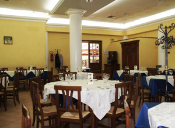
La Botte
55, Viale Europa
+39 0824 991103
www.ristorantelabottepietrelcina.it · Map
Very popular with local people. Located a little further back from the main tourist area but within walking distance. Good food at reasonable prices.
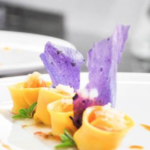
Ristorante Boda De Ciondro
Via Tratturo, 82020 Pietrelcina BN
+39 0824 997601
Instagram · Map
Located half way between Pietrelcina and Piana Romana, this restaurant caters for more of a fine dining experience. A bit more expensive than some of the restaurants in town. You will need a car to reach it but it is within a 2 or 3 minute taxi ride.
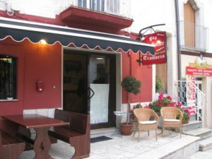
Old Soccer Pub
Piazza Santissima Annunziata, 75
+39 348 224 5062
TripAdvisor reviews · Map
Located just opposite the Parish Church and open mostly in the evening. In summer, it has tables outside and is great for good hamburgers and other modern fare. Very popular with both tourists and locals.
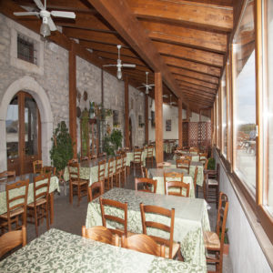
Paolo & Belinda Agriturismo
Via Crocelle, 82020 Pietrelcina (BN)
+39 346 6408696
www.agriturismolavecchiacascina.it · Map
This agriturismo restaurant uses its own, home grown produce to prepare a wide variety of delicious starters. Very popular with local people. Just a 2 minute car drive outside of the town.
Benevento
The nearest city to Pietrelcina is Benevento, about 15 minutes by taxi. There are several good restaurants there, but we particularly recommend this one.
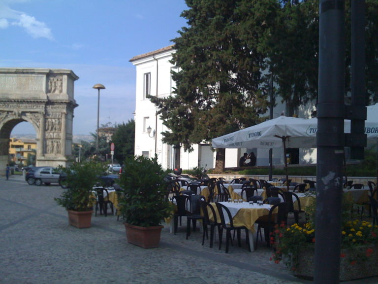
Ristorante Pizzeria Traiano
Via Giuseppe Manciotti 48-50, 82100 Benevento
+39 0824 040739
Pizza and Mediterranean cuisine · Map
We chose to highlight this restaurant because it is very easy to locate if you are new to Benevento, and because it is so good (and not expensive). Check the TripAdvisor reviews to read what others think.
“Have eaten in many 5 star places worldwide. This little Trattoria is a magnificent discovery – sitting about 50 yards away from the Arco Traiano in Benevento, in the shade of umbrellas, being attended by very friendly camerieri. Can recommend their Antipasti della Casa, all freshly made, home made prosciutto, sopressata, mozzarella, excellent vino aglianico. Skipped the pasta, but had the best alici fritti and bacalao livornese. Will for sure go there again should we be nearby.”
– TripAdvisor review
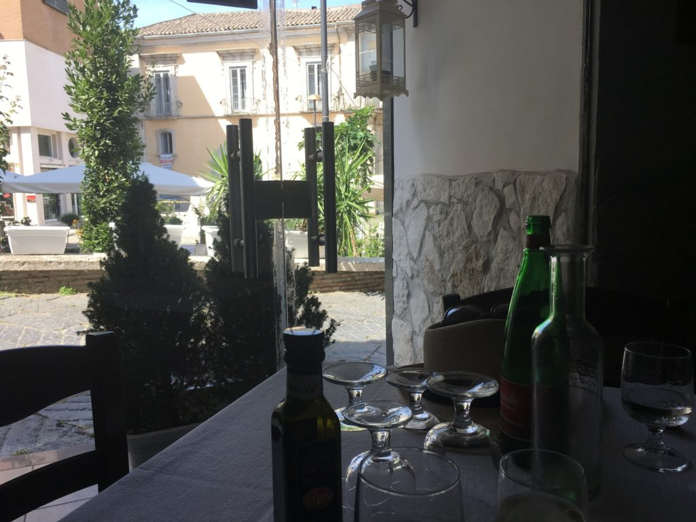
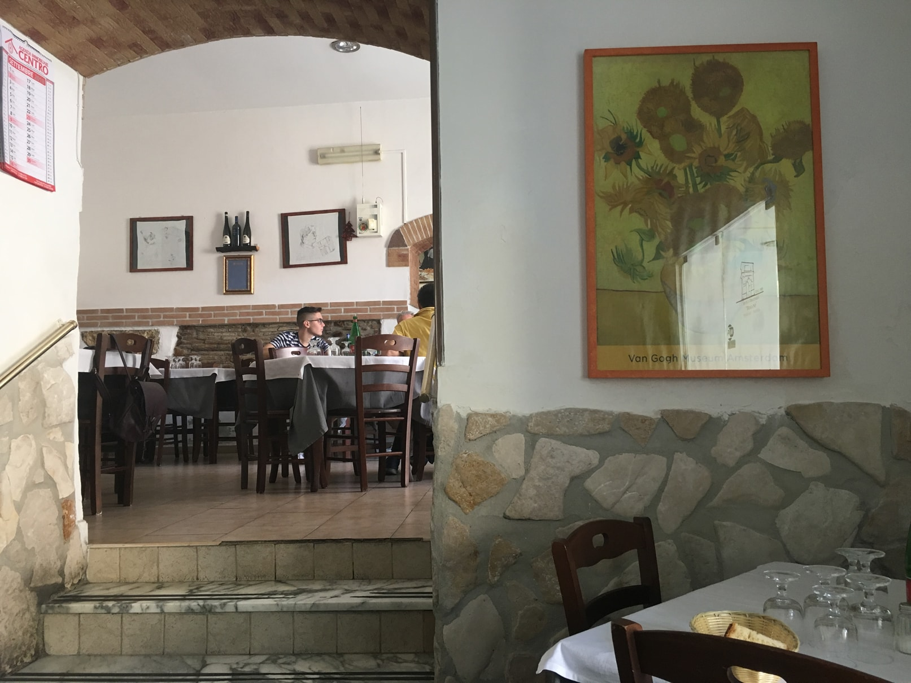
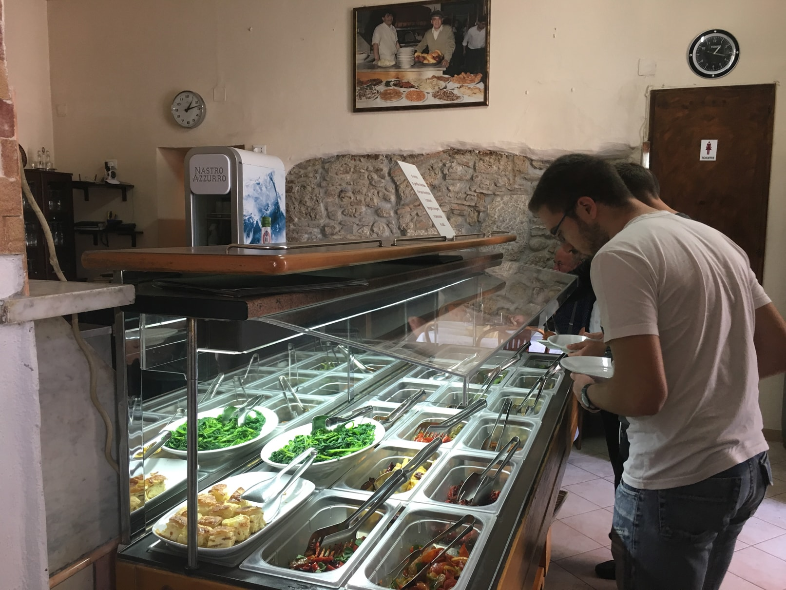